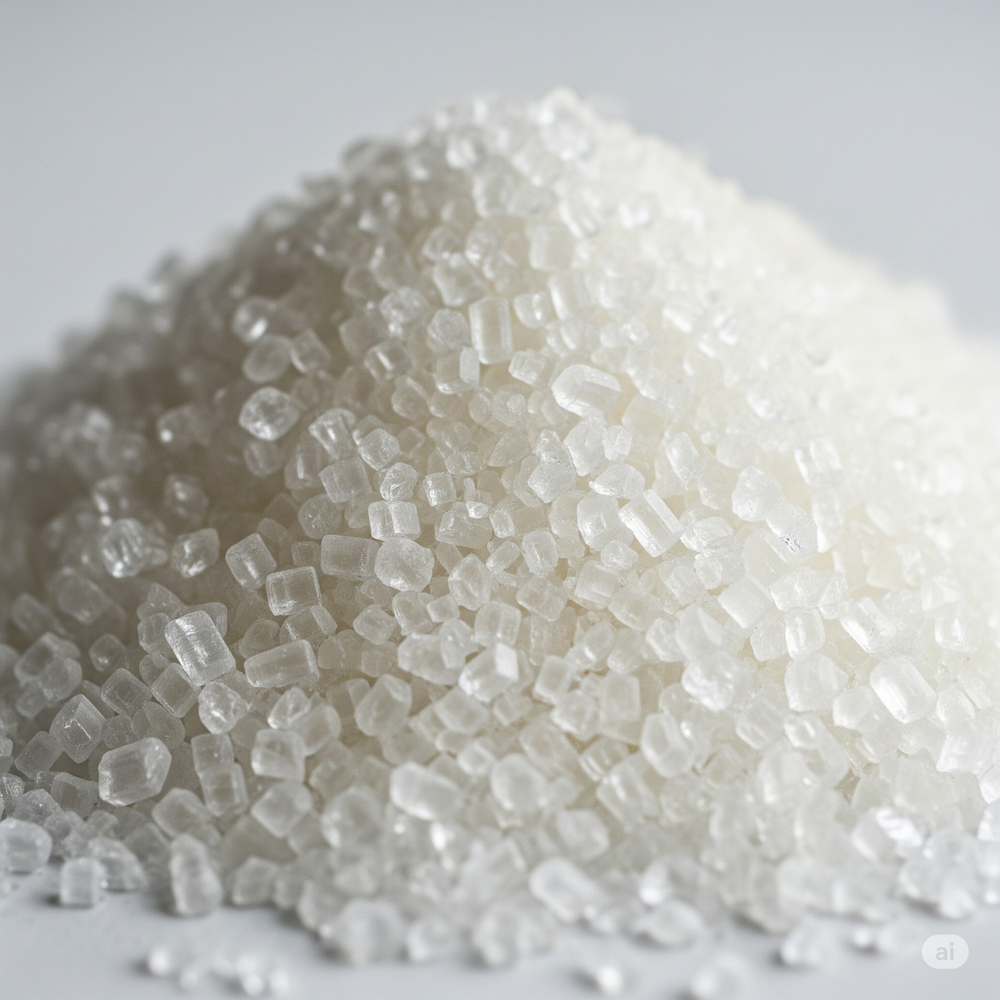
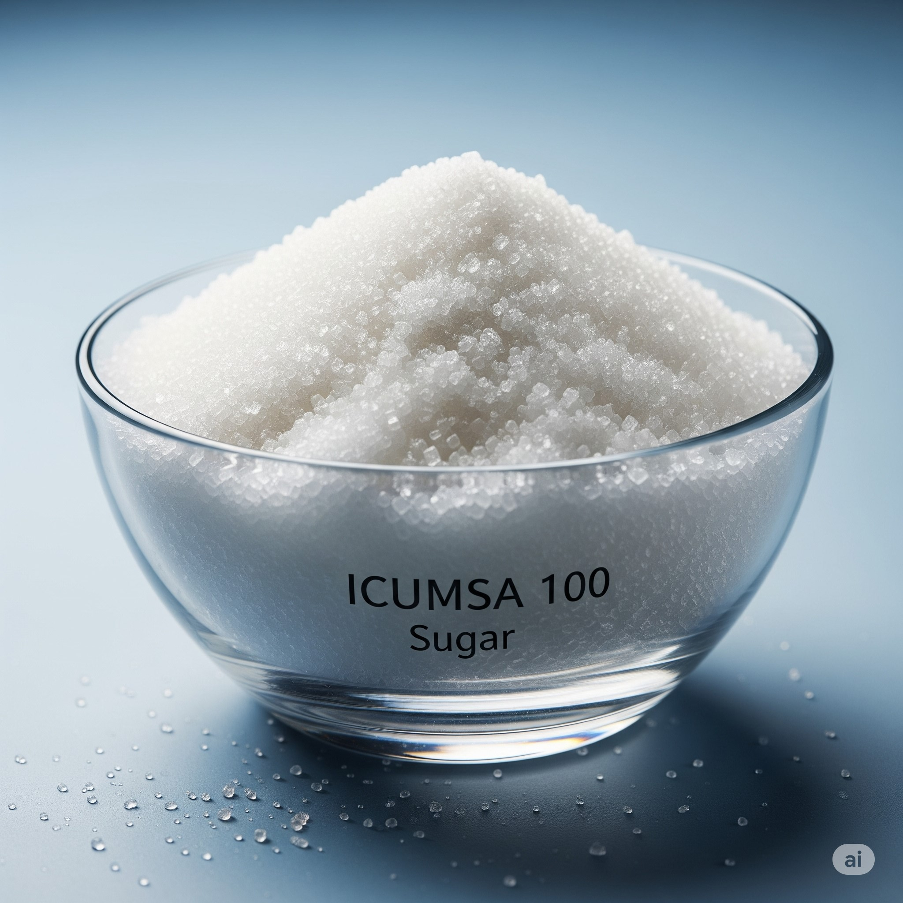
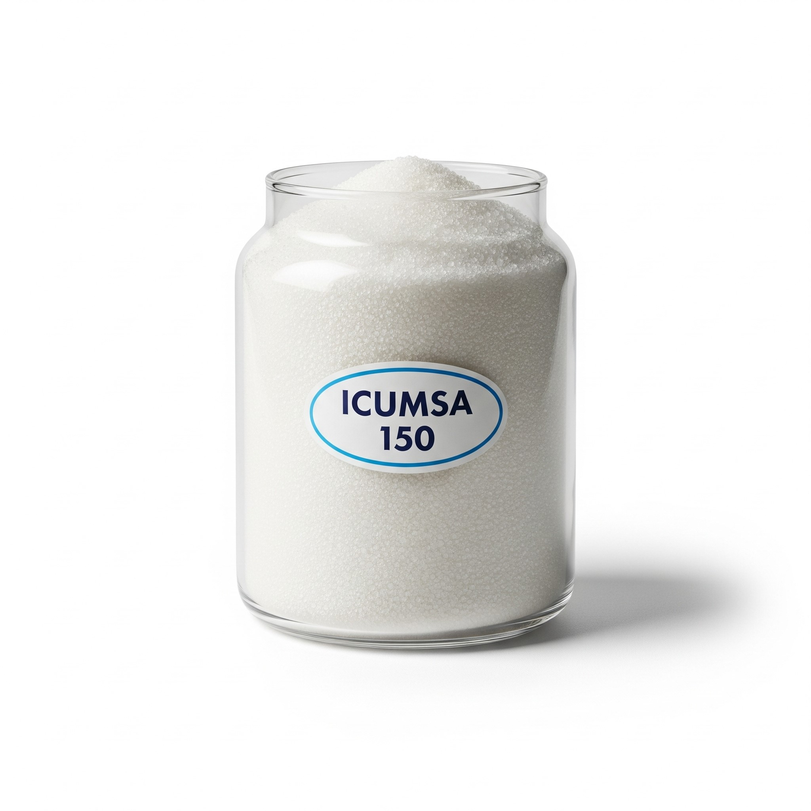
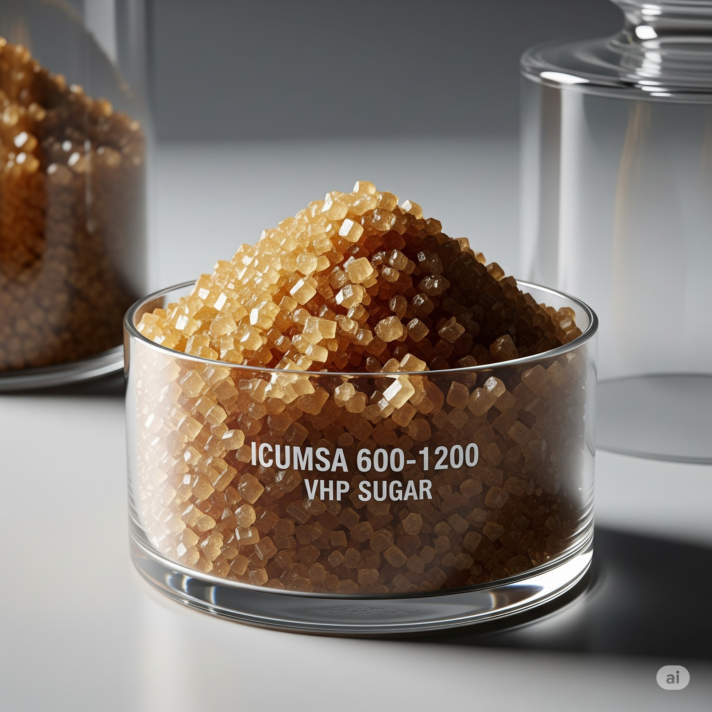

Nuestros Productos
Nos especializamos en el comercio internacional de azúcar ICUMSA y otros bienes esenciales. Trabajamos directamente con productores certificados para garantizar calidad, trazabilidad y cumplimiento normativo.
Comercializamos diferentes tipos de azúcar ICUMSA, cumpliendo con los más altos estándares internacionales de calidad, trazabilidad y certificación.
 Azúcar blanca refinada de alta pureza, ideal para consumo humano directo. Certificada por SGS, FDA, GACC y apta para exportación global.  Azúcar blanca estándar utilizada en panadería, bebidas y alimentos procesados. Buena solubilidad y color ligeramente cremoso.  Azúcar cruda de color dorado, ideal para procesos industriales y fermentación. Excelente relación calidad-precio.  Azúcar de alta polarización (Very High Polarity), utilizada como materia prima para refinación. Alta eficiencia logística y disponibilidad a granel.Azúcar ICUMSA
ICUMSA 45
ICUMSA 100
ICUMSA 150
ICUMSA 600–1200 VHP
Comparativa Técnica de Azúcar ICUMSA
Atributo
ICUMSA 45
ICUMSA 100
ICUMSA 150
ICUMSA 600–1200 VHP
Color (ICUMSA)
≤ 45
≤ 100
≤ 150
600–1200
Polarización
≥ 99.80%
≥ 99.70%
≥ 99.50%
≥ 99.40%
Humedad máxima
≤ 0.04%
≤ 0.06%
≤ 0.08%
≤ 0.10%
Cenizas
≤ 0.04%
≤ 0.07%
≤ 0.10%
≤ 0.15%
Uso principal
Consumo directo
Alimentos procesados
Industria / fermentación
Refinación industrial
Presentación
Sacos de 50 kg
Sacos de 50 kg
Sacos de 50 kg
A granel o sacos
Certificaciones comunes
SGS, FDA, GACC
SGS, FDA
SGS
SGS, GACC
Azúcar ICUMSA 45
Azúcar blanca refinada de alta pureza, ideal para exportación a mercados exigentes. Certificación SGS, FDA, y GACC.
Azúcar ICUMSA 150
Azúcar cruda de color dorado, utilizada en procesos industriales y alimentarios. Excelente relación calidad-precio.
Descargar Fichas Técnicas

Bienes Esenciales
También comercializamos arroz, maíz, aceite vegetal y otros productos de primera necesidad bajo demanda.